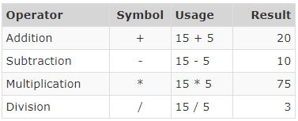
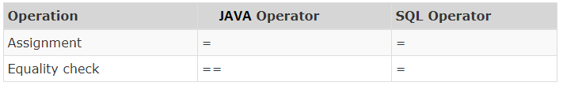
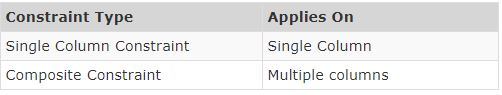
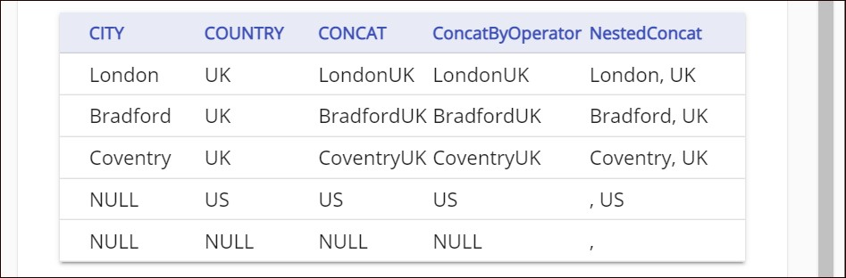

What is Data?
Data is an unprocessed set of inputs, which is not self-explanatory. We need to comprehend the idea of data. Data is a collection of facts about the object of interest. For e.g. data about a student would include information like name, address, roll no, subjects, marks etc. Software Applications need to store data as it is required to answer questions like e.g. how many students have scored above 90? Data is also required to convey a story e.g. how a student is categorized as Top Performer?
Data is crude, simply a bunch of realities which without anyone else doesn't pass on anything. We need to comprehend designs between genuine information and give it a significance. This is called information which causes us with answers to questions like who, when, what, where and so forth. Union of data and information drives us to address the how question and take business choices. This is referred to as Knowledge.
Requirements from data?
Software Applications that utilizes data are relied upon to meet a few necessities of end-users. Let us take the example of a Facebook application.
Limitations of Flat Files
Data is stored in flat files and can be accessed using any programming language. The file-based approach suffers following problems:
- Dependency of program on physical structure of data
- Complex process to fetch data
- Loss of data on simultaneous access
- Inability to give access based on record (Security)
- Data redundancy
Database Systems
A Database is a shared collection of logically related data and description of these data, designed to meet the information needs of an organization.
A Database Management System(DBMS) is a software system that enables users to define, create, maintain, and control access to the database. Database Systems typically have high costs and require high-end hardware configurations.
An Application Program communicates with a database by issuing an appropriate request (typically a SQL statement)
Client-Server Architecture is a computing model in which the server hosts, delivers and manages most of the resources and services to be consumed by the client.
Functions of DBMS
Database Management Systems offers several functions that help us overcome problems associated with file-based systems. We will focus on Data Management, Integrity, Transaction and Concurrency in this course. Security, Recovery and Utilities are out of scope for this introductory-level course.
Types of Database Systems
Database systems are categorized into four types based upon the underlying structure used to store data. These database systems in chronological order of their evolution are Hierarchical, Network, Relational and NoSql.
- Hierarchical Databases organize data into a tree-like structure. Data is stored as records which are connected to one another through parent child relationships. Some examples of Hierarchical Databases are Information Management System (IMS), Raima Database Manager (RDM) Mobile etc.
- Network Databases organize data into a graph structure in which object types are nodes and relationship types are arcs. Each record can have multiple parent and child records. Some examples of Network Databases are Integrated Database Management System (IDMS), Integrated Data Store (IDS) etc.
- Relational Databases organizes data into one or more tables. A table consists of attributes (columns), tuples (rows) and provides a way to uniquely identify each tuple. Tables are related to each other through parent child relationships. Some examples of Relational Databases are DB2, Oracle, SQL Server etc.
- NoSQL (Not only SQL) database uses key-value, graph or document data structures to store data. These databases aim for simplicity of design, horizontal scaling and finer control over availability. Some examples on No Sql databases are Cassandra, MongoDB, CouchDB, OrientDB, HBASE etc.
Relational Model
- Relational Databases store data in relations i.e. tables. Each relation must have a name.
- An attribute is a named column of a relation. It stores a specific information about an object e.g. salary.
- A tuple is a row in a relation. It represents relationship between attributes that can contain single value.
- Cardinality of relation is the number of rows it contains. e.g. Cardinality of relation below is 4.
- Degree of relation is the number of attributes it contains. e.g. Degree of relation below is 5.
- NULL represents the value of an attribute that is currently unknown or not applicable.
- A domain is the set of allowable values for one or more attributes.
- A collection of relations with distinct relation names is called as Relational Model.
Data Integrity and Constraints
Data integrity refers to maintaining and assuring the accuracy and consistency of data over its entire life-cycle. Database Systems ensure data integrity through constraints which are used to restrict data that can be entered or modified in the database. Database Systems offer three types of integrity constraints:
Candidate Key
A Candidate Key is a minimal set of columns/attributes that can be used to uniquely identify a single row/tuple in a relation. Candidate Keys are identified during database design, considering the basic business rules of the database. Consider the following relation with regards to a business firm:
Employee(EmployeeNo, Name, AadharNo, Salary, DateOfBirth)
Let us try to identify some candidate keys for this relation
Thus the choice of candidate key depends upon the business context.
Note: Aadhaar number is a 12-digit random number issued by the UIDAI (“Authority”) to the residents of India after satisfying the verification process laid down by the Authority. Any individual, irrespective of age and gender, who is a resident of India, may voluntarily enrol to obtain Aadhaar number.
Primary Key
A Primary Key is the candidate key that is chosen to uniquely identify a row in a relation. The mandatory and desired attributes for a primary key are:
Let us identify the primary key from the previous example:
Employee(EmployeeNo, Name, AadharNo, Salary, DateofBirth)
When two or more columns together identify the unique row then it's referred to as Composite Primary Key. If the combination of Name and DateOfBirth is chosen as primary key, that would be considered as composite primary key.
Foreign Key
A Foreign Key is a set of one or more columns in the child table whose values are required to match with corresponding columns in the parent table. Foreign key establishes a relationship between these two tables. Foreign key columns identified in child tables must refer to the primary key or unique key of the parent table. The child table can contain NULL values. Let us take an example of Employee and Computer tables as given below:
Computer is the parent table with COMPID as the primary key. Employee is the child table with ID as the primary key. If we need to assign a limit of one computer to an employee, then COMPID should be made the foreign key in the Employee table. It can just contain values that are available in Computer table COMPID column or no values at all(NULL). We cannot allocate a computer that does not exist to an employee.
Additionally, numerous rows in the child table can connect to the same row of the parent table depending upon the type of relationship.
Entity and Relationships
Entity Relationship (ER) Model
Jack is a part of the database team and he needs to present the database design to business users. The business users are non-technical and it is hard for them to read a verbose design document. How can Jack respond? Jack needs to use an Entity Relation (ER) Model.
ER model is a graphical portrayal of entities and their relationships which helps in understanding data independent of the actual database implementation. Let us understand some of the key terms used in ER Modelling.
A sample ER Diagram representing the Employee entity along with its attributes is presented below:
Relationships
Relationships are associations of one entity with another entity through a foreign key. Each relationship has a name e.g. a Computer is allocated to an Employee.
There can be more than one relationship between entities, e.g. an Employee works in a Department while the head of the department (also an employee) manages a Department.
A relationship can also exist between instances of the same entity, e.g. an Employee reports to a manager (also an Employee)
Cardinality of Relationships
Cardinality of relationship is the number of instances in one entity which is associated to the number of instances in another. For the relationship between Employee and Computer, it helps us answer questions like how many computers can be allocated to an employee, can computers be shared between employees, can employees exist without being allocated a computer etc. e.g. if 0 or 1 computer can be allocated to 0 or 1 employee then the cardinality of relationship between these two entities will be 1:1.
Cardinality of relationships are of three types: 1:1, 1:N and M:N.
A relationship with cardinality 1:1 is also called as one-to-one relationship or 1:1 relationship.
Some entities in the context of Infosys are Employee, Computer, Project, Salaried Account.
Crow Foot Notation
Crow foot notation is one of the approaches to represent the cardinality of relationship in an ER Model. The notation comprises of four symbols and one of them needs to be used for each entity in a relationship.
Let us say the relationship between employee and computer is such that a computer must be allocated to one and only one employee but an employee can be allocated with zero or any number of computers. Such a relationship is represented by the diagram below:

Relationships and Foreign Keys
Foreign keys has to be created in tables in order to establish the relationship between entities.
The relation in which a foreign key will be created depends upon the cardinality of the relationship. Let us now discuss the types of cardinalities and how it impacts the creation of the foreign key.
1:1 Relationship
1:1 relationship represents the relationship between a single occurrence of one entity and a single occurrence of the second entity. For e.g. consider a company where each employee can be allocated a maximum of 1 computer and computers are not shared between employees.
The Allot_Dt attribute is not a property of employee or computer. It belongs to the relationship and is hence represented differently in the ER Model.
We can see that the employee table has two additional attributes - CompId and Allot_Dt. CompId is a foreign key to establish the link between these two tables. Allot_Dt which is the attribute of the relationship is always stored in the table that has the foreign key.
Alternatively we could also have added Id and Allot_Dt attributes in computer table to establish the link.
1:N Relationship
1 : N relationship represents the relationship between the single occurrence of one entity and multiple occurrences of the second entity. For e.g. consider a company where each employee can be allocated with many computers but still, computers cannot be shared between employees.
In 1 : N relationships, the foreign key and relationship attributes are always added to the many (N) side of the relationship. Hence these attributes are added to the computer table. The reverse solution will not work.
M:N Relationship
M:N relationship represents the relationship between multiple occurrences of both entities. For e.g. consider a company where each employee can be allocated with many computers and computers can be shared between employees.
In M : N relationships, the relationship is represented by a completely new table that has a composite primary key. Such a design requires two foreign keys on the new table linking to the primary keys of each of the parent tables. The attribute of the relationship resides on this new table.
Introduction to normalization
In order to maintain the transactions in the retail outlet, the management employed an IT team that has created a relational schema designed based on the E-R modelling technique. One such relation is shown for your reference.
This is represented in a relational notation as follows:
retailoutletstock (retailoutletid, itemcode, description, retailoutletlocation (street, city, zipcode), qtyavailable, retailunitprice, itemclass)
When databases are designed and used, they need to be checked for the possibility of several issues such as inconsistency, redundancy and uncertainty. Let us understand the inconsistency and redundancy of data with examples from the case study given.
Data redundancy
Data redundancy occurs when the same data is multiplied across the database and can be found repeated in an unnecessary form. Consider the data stored for a retailoutletstock as per the relation given earlier.
You can notice in the data stored that the retailoutletid and retailoutletlocation are repeating for every item available in the retail outlet store. This is an example of redundant information. Redundant information will lead to more disk space to store the data than actually required.
Data inconsistency
Data inconsistency results from anything that affects data integrity. This can cause the data to be correct in one place and wrong elsewhere it is stored. This can lead to unreliable and meaningless information.
Consider the following relations for the case study:
retailoutletstock (retailoutletid, itemcode, description, retailoutletlocation (street, city, zipcode), qtyavailable, retailunitprice, itemclass)
itemavailability (itemcode, description, retailoutletid, retailoutletaddress (street, city, zipcode), qtyavailable)
The retailoutletlocation in the retailoutletstock table and retailoutletaddress in itemavailability relations refer to the address of a retail outlet but present in different forms. This may lead to an inconsistent address stored for a retail outlet .To retrieve the correct address or update it , both these relations need to be considered.
The issues mentioned arise due to poorly designed/structured databases or when they are expanded without much planning to include newer elements over a period. These issues can cause huge business failures and hence must be addressed. Data redundancies can be avoided by using normalization during design of databases, inconsistency can be avoided using database constraints.
Functional Dependency
Normalization is the process of reorganizing data in a database to ensure that there is no redundancy of data and data dependencies are logical (all related data items are stored together).
The different stages of normalization are known as “normal forms”. To accomplish normalization, we need to understand the concept of Functional Dependencies.
FUNCTIONAL DEPENDENCY
Functional Dependencies in DBMS is a relation between two or more attributes. It can be categorized as -
- Fully Functional Dependency
- Partial Dependency
- Transitive Dependency
DEPENDENCY IN A RELATION:
- An attribute of a relation can be determined by knowing one/more attributes of the same relation
- The attribute which determines the value of other attributes is known as “Determinant”
retailoutletstock (retailoutletid, itemcode, description, retailoutletlocation(street, city, zipcode), qtyavailable, retailunitprice, itemclass)
The following are the functional dependencies in the relation:
- In a relation R, A and B are attributes
- Attribute B is functionally dependent on attribute A if each value of A determines EXACTLY ONE value of B, which is represented as A -> B (A can be composite in nature)
- A is called determinant and B is called dependent
To explain these dependencies, we will use the following relation that has been described in the earlier sections.
retailoutletstock (retailoutletid, itemcode, retailoutletlocation, qtyavailable, description, retailunitprice, itemclass)
{retailoutletid, itemcode} is the candidate key of the above relation. The three types of dependencies are illustrated below.
In retailoutletstock, we have identified {retailoutletid, itemcode} as the candidate key. The attribute, qtyavailable is fully dependent on {retailoutletid, itemcode}. The attribute, description is dependent on itemcode(a part of candidate key). Hence description is partially dependent on {retailoutletid, itemcode}. The attribute, retailunitprice is dependent on {retailoutletid, itemcode}, itemclass is dependent on retailunitprice, which creates a transitive dependency among them.
If functional dependencies are not properly defined, the databases may suffer from the following anomalies.
- Update/Modification anomalies – if data is inconsistently stored, it can lead to update anomalies
- Deletion anomalies – when a row is deleted that may contain attributes that shouldn't be deleted
- Insert anomalies – when a data is inserted that does not exist at all
Normalization is a method to remove all these anomalies and bring the database to a consistent state.
Let us see these anomalies in detail with an example from the above case study.
An anomaly is an unexpected side effect from trying to insert, update, or delete a row. Essentially more data must be provided to accomplish an operation than would be expected. Consider the table retailoutletstock:
What happens if we try to insert(add) the details of a new retail outlet that currently has no items in its stock?
* NULL values would be inserted into the itemdetails columns, which is not preferable.
What happens if we try to delete the item of an itemcode I1005?
* The details of the retail outlet R1003 will also be deleted from the database.
How many rows will be updated if the retail outlet location of R1002 is changed from Victoria Street to Saint John Street?
* 3 Rows will be updated
What are the details we need to insert when new items are supplied to a retail outlet?
* Apart from all necessary details, retailoutletlocation will also be inserted which is redundant
We have seen insert, delete, update anomalies, and data redundancy in the above given example. Functional dependencies may lead to anomalies. To minimize anomalies there is a need to refine functional dependencies using Normalization.
Normal Forms
To revisit, Database normalization is the process of structuring a relational database in accordance with a series of so-called normal forms in order to reduce data redundancy and improve data integrity. Normalization was first proposed by Edgar F. Codd.
“Normal Forms” (NF) are the different stages of normalization
- 1 NF (First Normal Form)
- 2 NF (Second Normal Form)
- 3 NF (Third Normal Form)
- BCNF (Boyce -Codd Normal Form)
- 4 NF (Fourth Normal Form)
- 5 NF (Fifth Normal Form)
- 6 NF (Sixth Normal Form)
4NF- 6NF is applicable to multivalued dependencies and complex table scenarios. Based on our course scope, we will discuss 1NF,2NF and 3NF in this module.
The retailoutletstock table has an attribute, retailoutletlocation which has the data for street, city and zipcode. Any insertion/deletion/modification performed on retailoutletlocation affects efficiency and performance.
For example: If the requirement is to fetch records based on the city, we need to perform string operations on the column retailoutletlocation, which will be simpler if we have a single-valued column for the city.
First Normal Form: 1 NF
A relation R is said to be in 1 NF (First Normal) if and only if:
1)All the attributes of R are atomic in nature
2)There should not be any multi-valued attribute
How do we achieve 1 NF?
So, we will split the non-atomic attribute, retailoutletlocation into three different attributes- street, city and zipcode all of them being atomic, the resulting relation will be in First Normal Form. The resulting retailoutletstock table in First Normal Form(1 NF) is:

Note:- A multi-valued attribute is an attribute which can have more than one value at a time which is not the case in the above relation.
Advantage:
1 NF allows users to use the database queries effectively as it removes ambiguity by removing the non-atomic and multi-valued attributes which creates the major issues in the future while updating and extracting the data from the database.
Limitation:
As we can see in the retailoutletstock relation above, the attribute description is dependent only on itemcode (I1001->Britannia Marie Gold Cookies). Hence, we have the redundant data in the table which can be eliminated by having a separate table for item details which leads us to the next normal form.
Second Normal Form: 2 NF
A relation R is said to be in 2 NF (Second Normal) form if and only if:
1)R is already in 1 NF
2)There is no partial dependency in R which exists between non-key attributes and key attributes
How do we achieve 2 NF?
To make a table 2 NF compliant, remove all such partial dependencies and decompose the relation.
The retailoutletstock is already in 1 NF, but we have the following partial dependencies which must be removed in order to make the relation in 2 NF.
Since the description is dependent only on itemcode, we can create a separate table item with itemcode and description as its attributes, so that the partial dependencies are eliminated. Similarly, retail outlet details like retailoutletid, street, city and zipcode attributes must be in a separate table retailoutlet. Also, the attributes qtyavailable, retailunitprice, itemclass are dependent on both itemcode and retailoutletid. Hence, we will have another table retailstockdetails with those attributes.
After removing the partial dependencies, we have three tables item, retailoutlet and retailstockdetails, each of them in 2 NF.
Are all the anomalies eliminated?
What will happen if we try to delete the record containing itemcode I1002 from retailstockdetails?
* The definition of itemclass C will also be lost from the database.
What if there is a change in the business rule for the itemclass, say the retailunitprice range has been increased by 1000 for every itemclass?
Multiple rows have to be updated.
Insert, delete and update anomalies still exist which needs to be eliminated. This necessitates further normalization.
The root cause of these anomalies is the transitive dependency between retailoutletid, itemcode, retailunitprice and itemclass. This needs to be eliminated.
Advantage:
2 NF attempts to reduce the amount of redundant data in a table by extracting it, placing it in a new table(s) and creating relationships between those tables.
Limitation:
Still, in the case study, we can see that itemclass attribute is completely dependent on retailunitprice and it is repeated whenever two items have the same retailunitprice. So, we still have data redundancy.
If the itemclass is changed for a range of retailunitprice, we will have to update all the records in the retailstockdetails. Which leads us to the third normal form.
Third Normal Form: 3 NF
A relation R is said to be in 3 NF (Third Normal Form) if and only if:
1)R is already in 2 NF
There is no transitive dependency which exists between key attributes and non-key attributes through other non-key attributes
A transitive dependency in a database is an indirect relationship between attributes in the same table that causes a functional dependency.
X -> Z is a transitive dependency if the following three functional dependencies hold true:
- X->Y
- Y does not ->X
- Y->Z
How do we achieve 3 NF?
To make retailstockdetails 3 NF compliant, we must remove all such transitive dependencies by decomposing the relation.
Note:- The item and retailoulet tables are not having any transitive dependency.
After removing the transitive dependency from retailstockdetails, it will result in the following tables.
Even after converting to 3 NF, we can see that storing itemclass for every retailunitprice is not an efficient way. So, it is more appropriate to store it in the following way:
Advantage:
3 NF ensures data integrity. It also reduces the amount of data duplication.
Diagrammatic Representation
Let us summarize the learning through the diagram given below.
Guidelines
Guidelines for using normalization:
- Depending on the business requirements, the tables can be normalized up to 2nd normal form or 3rd normal form
- Tables in 3 NF are preferred in applications with extensive data modifications
- Tables in 2 NF are preferred in applications with extensive data retrieval
- Reason: retrieving data from multiple tables is a costly operation
- Converting the tables from higher normal form to lower normal form is called “Denormalization”
Summary
Database design is critical to a database management system that meets the data requirements of an enterprise system. We have explained the need for normalization, functional dependencies and normal forms in this module. The image given below summarizes the conversion of relation from an unnormalized form to third normal form:
Normalization : A Quick Guide
Find out the candidate key(s) and the highest normal form in the given relation:
trainee (traineeid, traineename, classroomid, pcid)
Consider the following functional dependencies:
Solution: candidate key
Step 1: Identify the candidate key, with the help of given functional dependencies.
As per the first functional dependency, let us assume traineeid is a candidate key. To confirm that traineeid is a candidate key, it should determine rest of the attributes.
The given two functional dependencies show that we can determine the rest of the attributes (i.e. traineename, classroomid and pcid) with the help of traineeid.
Hence, traineeid is a candidate key. But as we know, a relation can have more than one candidate key. Let’s check if we have another candidate key in the given relation.
As per the second functional dependency, let us assume {classroomid, pcid} is a composite candidate key. Again if {classroomid, pcid} is a composite candidate key, it should determine {traineename and traineeid}.
The given two functional dependencies illustrate that we can determine {traineename and traineeid} with the help of {classroomid, pcid}.
Hence, {classroomid, pcid} is a composite candidate key in a given relation.
But, to prove that it is a candidate key, the subset of {classroomid, pcid} should not determine the rest of the attributes independently. In a given relation, it is not possible.
Hence, we have two candidate keys:
a) traineeid
b) {classroomid, pcid}
Solution: Highest normal form
a) Identify the key attributes and non-key attributes.
As we know, attributes that are the part of the candidate key is/are called key attribute(s) and others is/are non-key attributes. In our case,
Key attributes are { traineeid }, {classroomid, pcid }
Non-key attribute is { traineename }
b) Check for 1NF:
As per the definition of 1NF, all the attributes should be atomic in nature. Since nowhere it is mentioned that an attribute of a given relation is non-atomic or multi-valued. So, it holds for a given trainee relation.
c) Check for 2NF:
As per the definition of 2NF, there should not be any partial dependency between non-key and key-attributes.
It means we should not have a dependency like:
In our case, the composite candidate key is {classroomid and pcid}.
Let’s check, do we have any dependency like:
After looking at the given functional dependencies, we can conclude that there is no partial dependency existing. Hence the given relation is in 2NF.
d) Check for 3NF:
Again, as per the definition of 3NF, the relation should not have any transitive dependency between the key and non-key attributes via another non-key attribute.
In simple words, we should not have any dependency among non-key attributes. If Non-key-attribute -> Non-key-attribute, then there is a transitive dependency and the relation will not be in 3NF.
In our case, we have only one non-key attribute, so there is no chance of having transitive dependency in a relation. Hence, our trainee relation is in 3NF.
Structured Query Language (SQL) is used to manage data in all relational databases like DB2, Oracle, SQL Server etc. SQL standards are maintained by ISO. While most database products comply with the ISO standard, they also offer additional proprietary features. In this course we will restrict ourselves to feature set offered by Oracle database.
- Data Definition Language is used to specify the structure i.e. schema of a relational database. DDL provides commands for creation, modification and deletion of various database objects like tables, views, stored procedures, indexes, constraints etc. The output of DDL is placed in data dictionary which contains metadata i.e. data about data.
- Data Manipulation Language enables users to access or manipulate data in a relational database. DML provides commands for retrieval, creation, deletion and modification of information in a database. DML requires a user to specify what data is needed without specifying how to get it. The database engine is left to figure out effective means of retrieving data.
- Data Control Language enables users to provide access to various database objects like views, tables, stored procedures etc. in a relational database. Typically only DBAs have access to grant and revoke privileges. Whenever a user submits a query, the database checks against the granted privileges and rejects the query if it is not authorized.
- Transaction Control Language specifies commands for beginning and ending a transaction. A transaction consists of a sequence of SQL statements that are applied in an atomic (all or none) manner. A commit makes all the changes applied by the transaction permanent on the database while a rollback undoes all the changed applied by the transaction.
To summarize, Structured Query Language (SQL) provides four types of languages based on type of operation to be performed on a database. These languages can be considered as subsets of SQL and logical groups only. Physically commands for all these languages are executed from the same interface provided by the database.
Introduction to Data Types and Operators
Data types :
- Character data types
- Integral data types
- Non-Integral data types
- Miscellaneous data types
Operators :
- Arithmetic operators
- Comparison operators
- Logical operators
SQL Character Data Types
SQL supports two character data types for storing printable and displayable characters. They are used for storing information like name, city, description etc.
SQL Integral Data Types
SQL, unlike programming languages, does not provide support for arbitrary length numbers i.e. numbers not bound by size limits. For e.g. Python supports bignum and Java supports BigInteger data types.
SQL Nonintegral Data Types
Nonintegral data types have an integer part and a fractional part. Either NUMERIC, DECIMAL or NUMBER data types can be used to store nonintegral numbers.
Scale is the number of digits allowed after the decimal point. Precision is the total number of significant digits i.e. digits both before and after the decimal point. If Scale is not provided then NUMBER datatype can be used to store integral values.
Precision and Scale of non-integral data type determines the maximum value that can be stored. It also determines, how input data will be modified before storing the value. We can use the following logic to determine the value that will be stored:
Let us see some examples of how input data is changed before storage.
Miscellaneous Data Types
For storing date and large objects, SQL supports the following data types:

Here are some key events and their dates from history:
Operators and Expressions
Arithmetic Operators
Comparison Operators
There is one important difference between Equal To comparison operator in programming languages and SQL. While SQL uses a single '=', programming languages typically use double '=' to distinguish it from the assignment operator.
Note - SQL also supports operators similar to those in programming languages
An arithmetic operation involving a NULL returns NULL
The Java operator specified here is applicable for other programming languages like Python, C, C++ etc
Other Comparison Operators
Logical Operators
Expressions
Similar to arithmetic expressions in programming languages, SQL expressions are created from constant values, operators and brackets. They evaluate to a single value and are used in SELECT and WHERE clauses. Some examples are given below:
Create and Drop Table
CREATE TABLE statement is used to create a table in a database. Database tables are organized into rows and columns. Each table must have a name and can have any number of columns (minimum 1 column is required). Each column must have a data type which determines the type of values that can be stored. CREATE TABLE command will fail if a table is already existing in the database with the same name. All tables must have a unique name.
DROP TABLE statement is used to remove an existing table from the database.
 CREATE TABLE Student (
StudentId INTEGER,
FName VARCHAR2(10),
Gender CHAR(1),
DOJ DATE);
CREATE TABLE Student (
StudentId INTEGER,
FName VARCHAR2(10),
Gender CHAR(1),
DOJ DATE);
Drop Table
DROP TABLE statement is used to drop an existing table from the database. The syntax for DROP statement:
DROP TABLE <Table name>;
Note:- Tables without any reference with the child table can be dropped using the DROP statement given above.
The values of the primary/unique key column(s) from the parent table are referred to in the foreign key column of the child table (referential integrity). This reference will not allow the master table to be dropped prior to the child table.
When the child table is dropped first, the values that are referred to are removed. So, now the parent table can be dropped from the database without any error.
Conclusion: Drop all the child tables first, then drop all the parent tables.
An alternate method to drop table is given below:
DROP TABLE <Table name> CASCADE CONSTRAINTS;
CASCADE CONSTRAINTS clause should be added to the DROP statement to drop all the referential integrity constraints that refer to primary and unique keys in the table.
Since the referential integrity constraint is dropped from the parent table, the parent table can be dropped first, followed by the child table.
Conclusion: CASCADE CONSTRAINTS clause will drop all the referential integrity constraints that refer to the primary or unique keys in the table. Hence all the parent tables can be dropped before the child tables.
DROP TABLE Student; DROP TABLE Student CASCADE CONSTRAINTS;Constraints
We have learnt that data integrity in database systems is enforced through constraints. These constraints are typically specified along with the CREATE TABLE statement. Constraints are classified into different types based on the number of columns they act upon as well as on the way they are specified.
Table level constraint can be specified after all columns used in the constraint have been defined. It is not necessary to specify them after all columns in the table are defined. Composite constraints can only be specified as table level constraints.
Various constraints that can be created on database tables are:
NOT NULL, PRIMARY KEY, CHECK, UNIQUE, FOREIGN KEY
We can also specify DEFAULT value for a column. Oracle database does not consider DEFAULT as a constraint.
Not Null Constraint
NOT NULL Constraint prevents a column from accepting NULL values. NOT NULL can only be applied as a column level constraint. Constraint name is optional and it can be specified by using CONSTRAINT keyword.
CREATE TABLE Student ( StudentId INTEGER CONSTRAINT Stud_SId_nn NOT NULL, FName VARCHAR2(10) NOT NULL, LName VARCHAR2(10));Space(' ') is not treated as NULL and is successfully inserted.
Oracle treats Empty String('') as NULL and hence record could not be inserted.
DEFAULT
A column can be given the default value by using DEFAULT option. The data type of column and default expression must be the same. DEFAULT option can be provided for nullable as well as NOT NULL attributes. Oracle database does not consider DEFAULT as a constraint.
CREATE TABLE Student ( StudentId INTEGER, FName VARCHAR2(10), DOJ DATE DEFAULT SYSDATE);Default value is not used if you provide a NULL value.
Default value is not used if you provide a value.
PRIMARY KEY Constraint
PRIMARY KEY constraint on a column ensures that the column cannot contain NULL and duplicate values. We can have only one PRIMARY KEY in a table.
CREATE TABLE Student ( StudentId INTEGER CONSTRAINT stud_sid_pk PRIMARY KEY, FName VARCHAR2(10), ContactNo NUMBER(10));CHECK Constraint
CHECK constraint is used to limit the values that can be specified for a column.
CREATE TABLE Student ( StudentId INTEGER, FName VARCHAR2(10), Gender CHAR(1) CONSTRAINT Stud_gender_ck1 CHECK(Gender IN('M', 'F')));UNIQUE Constraint
UNIQUE constraint on a column ensures that two rows in a table cannnot have same value in that column. Unlike Primary Key, UNIQUE constraint allows NULL values. A table can have many UNIQUE constraints.
CREATE TABLE Student ( StudentId INTEGER, FName VARCHAR2(10), ContactNo NUMBER(10) CONSTRAINT Stud_cno_uk UNIQUE);FOREIGN KEY Constraint
The student with id 2001 is not a valid value as it is not present in the student table. To avoid this problem, the relationship has to be built between the Student and Marks table. This can be achieved by using FOREIGN KEY.
Student Table has already been created and inserted with few records in the database.
Let us now create a table Marks which stores marks scored by each Student in each Course
CREATE TABLE Marks( CourseId INTEGER, StudentId INTEGER CONSTRAINT marks_sid_fk REFERENCES Student(StudentId), MarksScored DECIMAL(5,2));Composite PRIMARY KEY
Students are not able to register for a course which is already registered by another Student e.g. Student 1002 could not register for course 801 as it is already registerd by student 1001. Students should be able to register for many courses. This problem can be solved by using composite primary key with columns (CourseId, StudentId).
CREATE TABLE Marks( CourseId INTEGER, StudentId INTEGER CONSTRAINT marks_sid_fk REFERENCES Student(StudentId), MarksScored DECIMAL(5,2), CONSTRAINT marks_cid_pk PRIMARY KEY(CourseId, StudentId));Create Table Syntax Errors
You cannot specify column names in bracket for column level constraint except CHECK constraint
StudentId INTEGER PRIMARY KEY (StudentId)
Corrected: StudentId INTEGER PRIMARY KEY
Constraint name must be provided if the CONSTRAINT keyword is used
FName VARCHAR2(10) CONSTRAINT NOT NULL
Corrected: FName VARCHAR2(10) CONSTRAINT Stud_FName_NN NOT NULL
Composite constraints cannot be specified as column level constraint
LName VARCHAR2(10) CHECK (FName <> LName)
Corrected: LName VARCHAR2(10), CHECK (FName <> LName)
We have resolved this error by specifying the composite constraint as a table level constraint.
The default value must be provided
DOJ DATE DEFAULT
Corrected: DOJ DATE DEFAULT SYSDATE
The condition for CHECK constraint must always be enclosed within brackets
Gender CHAR(1) CONSTRAINT Student_Gender_Ck CHECK Gender IN('M', 'F')
Corrected: Gender CHAR(1) CONSTRAINT Student_Gender_Ck CHECK (Gender IN('M', 'F'))
FOREIGN KEY keyword must not be used during column level constraint specification
PersonId INTEGER FOREIGN KEY REFERENCES Person(PersonId))
Corrected: PersonId INTEGER REFERENCES Person(PersonId))
Constraints Summary
Alter Table
According to changing requirements, we may need to modify the existing table structure. For example, If we want to make any changes to the student table created like adding a new column- address, one option is to drop the table which will delete all the existing data and then create it again.
What if the table has a lot of data and we do not want to lose existing data?
The table cannot be dropped now. One option is to take a backup of data, then drop and recreate the table and finally load the data from backup into the modified table. This approach might work but if the number of rows is large, then this process would consume a lot of time.
Is there an easier way to avoid all these troubles?
We need to use ALTER TABLE command through which the structure of the existing table can be changed without any loss of data. It can also be used to rename a column, change the data type of a column and to add or remove constraints.
Syntax for ALTER TABLE command is provided below:
Drop one column
The column can be removed from the table with DROP clause. The column dropped cannot be recovered back. At least one column should be present in the table after dropping the columns.
ALTER TABLE Student DROP (DOB);ALTER statement can also be used to drop multiple columns.
ALTER TABLE Student DROP (GNDR, MobNo);Add one column
The Address column can be added to the existing student table with ADD clause. The new Address column will become the last column in the table. The existing rows contain NULL value for the newly added column.
ALTER TABLE Student ADD Address VARCHAR2 (20);ALTER statement can also be used to add multiple columns. The columns should be placed with in the parentheses.
ALTER TABLE Student ADD (Course VARCHAR2 (20), Marks NUMBER (10));Modify
The data type of the column can be modified with the MODIFY clause. The size of the data type can be increased or decreased. The column should be empty for decreasing the size or for changing the data type from one type to another.
ALTER TABLE Student MODIFY Name VARCHAR2(50);The default value can be added to a column with the MODIFY clause and DEFAULT option. If no value is inserted in a column then default value will be inserted. The data type of the column and default expression must be same.
ALTER TABLE Student MODIFY DOJ DEFAULT SYSDATE;The name of the column can be changed with RENAME COLUMN clause.
ALTER TABLE Student RENAME COLUMN Id TO SID;Insert Statement Syntax
Insert statement is used to add tuples (records) to the table. It supports three alternate syntaxes as shown below:
If column names are not used then values must be provided for all columns in the order of their specification during table creation.
If column names are used then the data provided in the values clause must have the same data type of column at same position.
Multiple rows can be inserted through a single INSERT statement only when it is used with SELECT statement. You will learn about SELECT QUERY shortly.
While inserting data, column values should match column type definition(e.g., you can’t insert a textual value into the numerical column/attribute). If the column is of strings or date time or characters, they need to be enclosed in single quotes(You cannot use double quotes). String data is case sensitive and will be stored as given within quotes. If the data is numeric, you don't need the quotes. NULL also should not be enclosed with quotes.
without columns
The simplest syntax for insert statement uses value clause without column names. All the column values must be specified in the same order as they appear in the table.The NULL keyword needs to be used if any attribute expects a null value.
INSERT INTO Employee VALUES (6, 'James Potter', '01-Jun-2014', 75000.00, 1000.00, 'ETA', 'PM', NULL, 1004);without column names incorrect order
Any attempt to insert data by specifying values in an incorrect order will result in an error.
without column names missing values
Value must be specified for all columns of the table. Any missing value will result in failure
Note: Alphanumeric values must be enclosed in quotes.
columns in correct order
INSERT INTO Employee (Id, Ename, DOJ, Salary, Bonus, Dept, Designation, Manager, Compid) VALUES (7, 'Ethan McCarty', '01-Feb-2014', 90000.00, 1200.00, 'ETA', 'PM', NULL, NULL);collumns in any order
Column names need not be supplied in the same order as they appear in the table. However, the values should be supplied in the same order as the column names in the Insert statement.
INSERT INTO Employee (Id, Compid, Ename, DOJ, Salary, Bonus, Dept, Designation, Manager) VALUES (8, 1004, 'Emily Rayner', '01-Jan-2014', 25000.00, 100.0, 'ETA', 'SE', NULL);Note: 1)If values are supplied in an incorrect order then insertion will fail if data type mismatch occurs.
2)If values are supplied in an incorrect order then insertion will fail if constraint violation occurs.
omitting null
Attributes that allow null values can be omitted from the insert statement if null needs to be inserted. The omission should be from both column names and values clause.
omitting default
Attributes that have default values can be omitted from the insert statement if default value needs to be inserted. This works even if the attribute has NOT NULL clause.
Any attempt to insert record that violates the primary key constraint fails. Primary key columns must have unique values.
Any attempt to insert NULL value in primary key column fails. Primary key columns do not allow NULLs.
Unlike Primary Key, NULL values can be entered into columns with unique constraint.
Any attempt to insert record that violates the unique key constraint fails. Unique key columns must have unique values.
Unique constraint does not prevent multiple NULL values on the column. This is because two NULLs are not treated equal by SQL.
Any attempt to insert a record that violates a foreign key constraint fails. The foreign key could be due to reference to same table or a different table.
Select Statement Syntax
Select is the most commonly used statement in SQL. The SELECT Statement in SQL is used to retrieve or fetch data from a database. We can fetch either the entire table or according to some specified rules. The data returned is stored in a result table. This result table is also called the result-set.
With the SELECT clause of a SELECT command statement, we specify the columns that we want to be displayed in the query result and, optionally, which column headings we prefer to see above the result table. Simple SELECT statements can be represented as:
* Use * to fetch all attributes from table. It is equivalent to specifying all columns.
SELECT * FROM Employee* Use comma seperated attribute names to fetch specific columns from the input table.
SELECT Id, EName, Salary FROM Employee* Aliases are used to change column names in result. They must be provided immediately after an aliased column.
SELECT Id EmpId, EName EmpName, Salary FROM Employee* An optional AS keyword can be provided between the alias and the aliased column.
SELECT Id AS EmpId, EName AS EmpName, Salary FROM Employee* Expressions can be used to calculate values.
SELECT EName, Salary * 2 AS Double_Salary FROM Employee* A hardcoded value in select clause will appear as an additional column in the result with the same value on all records.
SELECT EName, 30 AS Value FROM EmployeeSelect clause does not remove duplicates from result even if multiple rows have same values.So we use distince
* Use DISTINCT clause to remove duplicates. Usage of DISTINCT should be avoided as far as possible as it can lead to performance issues.
SELECT DISTINCT Dept FROM Employee* If DISTINCT is used with multiple columns then two rows are considered equal only if all their columns match.
SELECT DISTINCT Dept, Manager FROM EMPLOYEE* DISTINCT must be used immediately after SELECT. Any attempt to use it between columns will result in error.
SELECT Dept, DISTINCT Manager FROM EMPLOYEE- error* Distinct can also be used with NULL columns to remove duplicate NULL values.
Where Clause
* Use comparison operators to restrict rows. The filter criteria can be on attributes that are not on the select clause.
SELECT ID, ENAME FROM Employee WHERE SALARY > 40000* Text values need to be enclosed in single quotes.
SELECT ID, ENAME FROM Employee WHERE ENAME = 'James Potter'* AND operator can be used to combine multiple conditions when all conditions must evaluate to true.
SELECT ID, ENAME FROM Employee WHERE SALARY >= 30000 AND DEPT = 'ETA'* OR operator can be used to combine multiple conditions when only one of the conditions must evaluate to true.
SELECT ID, ENAME FROM Employee WHERE SALARY > 75000 OR DEPT = 'ICP'* BETWEEN operator is used to check for values within a range. The result includes both the boundary values.
SELECT ID, ENAME FROM Employee WHERE SALARY BETWEEN 30000 and 50000* IN operator is used to check for multiple values of an attribute. It is equivalent to OR operation on multiple equality condition on the attribute on individual values.
SELECT ID, ENAME FROM Employee WHERE ID IN (2,3)* If IN clause contains duplicate values then the database server will remove duplicates before executing the query.
SELECT ID, ENAME FROM Employee WHERE DEPT IN ('ETA', 'ETA')* NOT operator is used to negate the condition.
SELECT ID, ENAME FROM Employee WHERE ID NOT IN (2,3)* Equal to operator cannot be used to check for NULL values
SELECT ID, EName FROM Employee WHERE BONUS = NULL - will get incorrect answer* IS NULL operator is used to check NULL values in columns.
SELECT ID, EName FROM Employee WHERE BONUS IS NULL* IS NOT NULL operator is used to check if not null values are present in a column.
SELECT ID, EName FROM Employee WHERE BONUS IS NOT NULL* If NULL is used with IN clause then the condition behavior is similar to = NULL (not is NULL)
SELECT ID, ENAME FROM Employee WHERE BONUS IN (NULL) - incorrect answer as above.* CHAR data types are stored with trailing spaces. While filtering them using equality operator you need not provide trailing spaces.
SELECT Id, EName, Designation FROM Employee WHERE Designation = 'PM'All Employee who are project manager as fetched even though trailing space was not provided in query
* Trailing spaces are ignored for CHAR data type.
SELECT Id, EName, Designation FROM Employee WHERE Designation = 'PM 'Even through query had two trailing spaces and database had 1, still all project managers are fetched.
* Leading spaces are not ignored for CHAR data type. If you use them you will not fetch any records.
SELECT Id, EName, Designation FROM Employee WHERE Designation = ' PM'* You can also filter for VARCHAR2 columns using equality operator.
SELECT Id, EName, Designation FROM Employee WHERE EName = 'James Potter'* Trailing spaces are not ignored for VARCHAR2 data type.
* Leading spaces are not ignored for VARCHAR2 data type.
LIKE
LIKE operator is used to match a character pattern. It allows us to use wild cards. SQL supports two wild cards: '%' which matches with any number of characters and '_' which matches with exactly one character. Employee Table
start pattern
SELECT ID, ENAME FROM Employee WHERE ENAME LIKE 'E%'end pattern
SELECT ID, ENAME FROM Employee WHERE ENAME LIKE '%r'Any where pattern
SELECT ID, ENAME FROM Employee WHERE ENAME LIKE '%m%'Dates end pattern
SELECT ID, ENAME, DOJ FROM Employee WHERE DOJ LIKE '%14'fixed pattern
SELECT ID, ENAME, DOJ FROM Employee WHERE DOJ LIKE '__-___-__'mixed pattern
SELECT ID, ENAME FROM Employee WHERE ENAME LIKE '_a%'errors:
If the WHERE clause has multiple conditions on the same column name then it has to be specified in each condition. Shortcut version allowed by some languages is not permitted.
SELECT ID, EName FROM Employee WHERE Designation = 'PM' OR 'SE' - error
If WHERE clause has multiple conditions on same column then the column name must be specified in all the conditions.
SELECT ID, EName FROM Employee WHERE Designation = 'PM' OR Designation = 'SE'Order of Query Execution
A SELECT statement can have many clauses so it is important to understand the order in which these are executed to provide the result. However, for ease of understanding we can refer to the execution order by FJWGHSDO.
A quick way to remember this is to use the mnemonic "Frank John's Wicked Grave Haunts Several Dull Owls". In this section we will focus on FROM, WHERE, SELECT and DISTINCT keywords.
The first step is always the FROM clause as we need to identify the tables from which data has to be fetched.
SELECT must be always be executed after the WHERE clause,
DISTINCT removes duplicates based on all columns of the SELECT clause. These columns could be a subset of all columns of the table OR may even contain derived columns through the use of an expression. Thus DISTINCT is dependent on SELECT clause and it's execution must happen after SELECT clause.
Update Statement Syntax
Update statement is used to modify existing rows in a single table in a relational database. Update statement can be represented as:
The database system ensures that no constraints are violated during execution of an update statement. Any violation of constraints results in failure of the statement.
* The UPDATE statement without the WHERE clause is used to UPDATE all rows in a table. This is rarely used in real life scenarios.
UPDATE Employee SET SALARY = SALARY * 1.10* The UPDATE statement with the WHERE clause is used to UPDATE only those rows that satisfy the filter criteria.
UPDATE Employee SET SALARY = SALARY * 1.20 WHERE ID = 2* Multiple columns can be updated in a single UPDATE statement.
UPDATE Employee SET SALARY = SALARY * 1.3, BONUS = SALARY * 0.30 WHERE ID = 1* The UPDATE statement fails if the same column is updated multiple times in the same statement.
UPDATE Employee SET SALARY = 100, SALARY = 200 WHERE ID = 1UPDATE fails as salary is being updated with 2 values in the same statement.\",
* Just like a SELECT query, there is no limit to filter conditions that can be provided in the WHERE clause.
UPDATE Employee SET SALARY = SALARY * 1.40 WHERE DESIGNATION = 'SE' OR DEPT = 'ETA'* Value of a column with a NOT NULL constraint cannot be updated to NULL.
UPDATE Employee SET ENAME = NULL WHERE ID = 1 - error
* All columns in a table including the PRIMARY KEY can be updated using UPDATE statement.
UPDATE Employee SET ID = 6 WHERE ID = 5* The UPDATE statement fails when the primary key constraint is violated.
* The UPDATE statement fails when the check constraint is violated.
* The UPDATE statement fails when the unique constraint is violated.
* Any attempt to UPDATE a record with values that do not exist in the referenced table will result in a failure
* UPDATE statement fails if any attempt is made to UPDATE a value in the master table that is referenced in child tables.
Delete Statement Syntax
DELETE statement is used to delete records from a single table in a relational database. The database system ensures that no constraints are violated during the execution of a delete statement. Any violation of constraints results in failure of the statement.
TRUNCATE statement can also be used to delete data from tables. TRUNCATE statement deletes all records from the table as it does not support WHERE clause. TRUNCATE statement is a faster option compared to DELETE when you have to delete all records from the table.
* Delete statement with WHERE clause is used to delete those rows that meet the filter criteria.
DELETE FROM Employee WHERE Id = 5;* Multiple rows can be deleted using a single delete statement. multiple row filter
DELETE FROM Employee WHERE Dept ='ETA' and Manager = 2;* Any attempt to delete a record that violates the foreign key results in a failure.
DELETE FROM Computer WHERE COMPID=1001;
ORA-02292: integrity constraint (WAL355923.SYS_C0010144629) violated - child record found. Delete fails as computer with id 1001 is already been assigned to employee James Potter.
* Delete statement will remove all rows of a table if it is used without a where clause.
DELETE FROM Employee;Error Codes
Whenever you perform a database operation for e.g. insert, update etc. you get a status code from the server indicating whether the operation was successful or not and the reason for the failure if any. In addition a descriptive message is also provided. Let us quickly recap on some of the codes you have encountered so far.
These status codes and messages are published in a reference document.
SQL provides many built-in functions in order to accomplish many tasks. Some of the commonly used built-in functions are:
Numeric functions,Character functions,Conversion functions,Date functions,Aggregate functions,Miscellaneous functions
While multi-row functions are common across databases, each database provides a set of single-row functions to operate on the data. In this course, you will learn about some of the single-row functions provided in Oracle database.
SQL functions are built in modules provided by a database. You can use them in data manipulation statements to perform calculations on data.
All functions return a single value. They are categorized into two types based on number of rows they operate upon.
Numeric Functions
SELECT City, MinTemp, CEIL(MinTemp) AS "Ceiling", FLOOR(MinTemp) AS "Floor", ABS(MinTemp) as "Absolute" FROM Weather; SELECT City, MinTemp, ROUND(MinTemp) as "Round", ROUND(MinTemp,1) as "RoundTo1Digit" FROM Weather;Character Functions
SELECT City, LENGTH(City) "LENGTH", LOWER(City) "LOWERCASE", UPPER(City) "UPPERCASE" FROM Weather; SELECT City, Country, CONCAT(City, Country) "CONCAT", City || Country "ConcatByOperator", CONCAT(CONCAT(City, ', '), Country) "NestedConcat" FROM Weather;  SELECT City, SUBSTR(City,1,4) FIRST4, SUBSTR(City,2,10) TEN_FROM_2, SUBSTR(City,3) ALL_FROM_3, SUBSTR(City,7, 2) TWO_FROM_7 FROM Weather; SELECT RecordDate, SUBSTR(RecordDate,1,2) "DAY", SUBSTR(RecordDate,4,3) "MONTH", SUBSTR(RecordDate,8) "YEAR" FROM Weather;Conversion Functions
* Use TO_CHAR to format a number by adding comma at specific locations, adding currency symbols, determining the number of digits before and after decimal.
SELECT MinTemp, TO_CHAR(MinTemp) DEF_FORMAT, TO_CHAR(MinTemp, '999.99') "FIXED_DIGITS", TO_CHAR(MinTemp, '9,9.99') "COMMA" FROM Weather;* Use TO_NUMBER to convert a number string into a number. The format, if provided, is used to parse the input i.e. the output is not formatted.
SELECT '1000.98' "ORIG_NOFORMAT", TO_NUMBER('1000.98') "CONV_NOFORMAT", '1,000.98' "ORIG_FORMAT", TO_NUMBER('1,000.98', '9,999.99') "CONV_FORMAT" FROM DUAL;* You can use TO_CHAR with dates to extract date parts like Date, Month, Year.
SELECT RecordDate, TO_CHAR(RecordDate, 'MON') "MONTH", TO_CHAR(RecordDate, 'Month') "FULL_MONTH", TO_CHAR(RecordDate, 'Dy') "DAY", TO_CHAR(RecordDate, 'Day') "FULL_DAY" FROM Weather;
* TO_CHAR can also be used to format dates in your desired format.
SELECT TO_CHAR(RecordDate) DEF_FORMAT, TO_CHAR(RecordDate, 'DD/MM/CCYY') INDIAN, TO_CHAR(RecordDate, 'MM/DD/YY') AMERICAN FROM Weather;* Use TO_DATE to convert a formatted date string to a date. The format is used only for parsing the input. Format string is not required if date string is in valid Oracle format.
SELECT '01-Jan-2014' DATE_STRING, TO_DATE('01-Jan-2014') CONV_NOFORMAT, TO_DATE('01-Jan-2014', 'DD-Mon-YYYY') CONV_FORMAT FROM DUAL
* Format string must be used with TO_DATE if date string is not in default Oracle format.
SELECT 'Jan-01-2014' DATE_STRING, TO_DATE('Jan-01-2014', 'Mon-DD-YYYY') CONV_FORMAT FROM DUAL* If date string is not in default Oracle format then TO_DATE function will give error if used without format string.
SELECT 'Jan-01-2014' DATE_STRING, TO_DATE('Jan-01-2014') CONV_NOFORMAT FROM DUAL - error
Date Functions
* SYSDATE
SELECT SYSDATE, SYSTIMESTAMP FROM DUAL;* Add months
SELECT RECORDDATE, ADD_MONTHS(RECORDDATE, 1) "NEXT_MONTH" FROM Weather;* months difference
SELECT MONTHS_BETWEEN('01-Feb-2014', '01-Jan-2014') "MONTH_DIFF1", MONTHS_BETWEEN('10-Jan-2014', '01-Jan-2014') "MONTH_DIFF2" FROM DUAL;Aggregate Functions
Aggregate functions operate on multiple rows to return a single row. Some aggregate functions like SUM (total), AVG (average) operates only on numeric columns while others like MIN (lowest value), MAX (highest value) and COUNT (number of rows) operate on all data types. All aggregate functions ignore NULL values except COUNT(*).
* Use MIN, MAX and SUM functions to calculate lowest, highest and total of a set of values.
SELECT MIN(Salary), MAX(Salary), SUM(Salary) FROM Employee* Use COUNT function to calculate the number of rows returned by a query.
SELECT COUNT(ID) COUNT_ID, COUNT(*) COUNT_STAR, COUNT(Bonus) COUNT_BONUS FROM Employee* Use DISTINCT with COUNT function to get a count of unique values for a column. Similary DISTINCT can also be used with other aggregate functions.
SELECT COUNT(Dept) Count1, COUNT(DISTINCT Dept) Count2 FROM Employee* AVG function can be treated as SUM / COUNT. It does not consider rows with null values for calculation.
SELECT AVG(Salary) AvgSalary, AVG(Bonus) AvgBonus1, SUM(Bonus) / Count(Bonus) AvgBonus2 FROM EmployeeMiscellaneous Functions
* Use NVL to replace missing data with default value.
SELECT CITY, NVL(CITY, 'Not Available') NVL_CITY, MINTEMP, NVL(MINTEMP, 0.0) NVL_MINTEMP, NVL(TO_CHAR(MINTEMP), 'Not Available') NVL_MINTEMP2 from Weather;* Use USER function to determine the current logged in user.
SELECT USER FROM DUAL;Case Statement Syntax
CASE statement can be used in SELECT clause to conditionally assign values to a computed attribute. It can also be used with WHERE, GROUP BY etc. CASE statement has two different syntax styles: Simple CASE expression and Searched CASE expression. Both of them are similar to if else statement in Java.
(1) Simple CASE expression :
Pseudo code:
if designation == 'SE'
salary = salary * 1.2
else if designation == 'SSE'
salary = salary * 1.1
else
salary = salary * 1.05
The CASE statement goes through conditions and returns a value when the first condition is met (like an IF-THEN-ELSE statement). So, once a condition is true, it will stop reading and return the result. If no conditions are true, it returns the value in the ELSE clause.
We can use the first syntax form when all conditions check for equality against a single column.
(2) Searched CASE expression :
Pseudo code:
if marks >= 85
grade = 'Excellent'
else if marks >= 65
grade = 'Good'
else
grade = 'Poor'
We can use the second syntax form to compare different conditions.
NOTE: ELSE is optional. If ELSE is omitted and no condition is true, then NULL is returned by CASE.
* equality
The query below displays the new salary after applying different salary hikes to employees based on their designation.
SELECT Id, EName, Designation, Salary,
CASE Designation
WHEN 'SE' THEN Salary * 1.2
WHEN 'SSE' THEN Salary * 1.1
ELSE Salary * 1.05
END New_Salary
FROM Employee;
*Expression
The query below displays the bonus of employees based on their designations.
SELECT EName, Designation, Bonus,
CASE
WHEN Designation = 'SE' THEN Bonus + 500
WHEN Designation = 'SSE' THEN Bonus + 1000
WHEN Designation = 'PM' THEN Bonus + 2000
ELSE Bonus
END AS NewBonus
FROM Employee;
* Multiple Conditions
Any comparison operator can be used to compare the conditions and any logical operators can be used to combine the conditions.
SELECT Id, EName, Designation, Salary,
CASE
WHEN Designation = 'SE' OR Designation = 'SSE' THEN TO_CHAR(Salary * 1.2)
WHEN Designation = 'PM' AND Salary >= 90000 THEN 'No hike'
ELSE TO_CHAR(Salary * 1.05 )
END New_Salary
FROM Employee;
Order By
When you write any select query to retrieve the information from the tables, it just retrieves the information based on the defined select query. It does not give the guarantee of the order of rows in the output. Therefore it is possible that the same query can give the same output having the different order of rows in it.
There might be a requirement to display the output in either ascending or descending order for e.g. displaying the student's details based on their decreasing marks, displaying the employee's details based on their increasing salary etc. In order to display the rows in sorted order, SQL has one clause called the ORDER BY clause.
Order By clause is used to sort the result of a query in a particular order. Before we understand the syntax of ORDER BY, let us understand the sorting process on tabular data. Data in a single column can be sorted in ascending or descending order.
We can also sort data by multiple columns. In such case data is sorted on the primary (first) column first. Sorting on the secondary column happens only when multiple rows have the same value in the primary column. The sort order can be different for the two columns i.e. primary can be sorted in ascending and secondary in descending and vice-versa. This two column sorting mechanism can be extended to any number of columns.

ORDER BY Syntax
ORDER BY must be used to specify the columns on which data has to be sorted and the sort order i.e. ascending or descending. Rows are sorted in ascending order if sort order is not specified. DESC should be used to sort the rows in descending order. ORDER BY clause must be the last clause and can be used only in SELECT statement. The sort order only applies to the query result i.e. the underlying data in the table is not sorted.
An important point to note is that sorting of rows in the result is guaranteed only on columns specified in the ORDER BY clause. If multiple rows have same value for columns in ORDER BY clause then they can appear in any order.
* Data is sorted in Ascending Order if the sort order is not specified
Select ID, ENAME, DOJ, SALARY, DEPT, DESIGNATION FROM Employee ORDER BY SALARY* You can sort the result based on any data type
Select ID, ENAME, DOJ, SALARY, DEPT, DESIGNATION FROM Employee ORDER BY DEPT ASC* Use DESC keyword after the column name to sort result in descending order
Select ID, ENAME, DOJ, SALARY, DEPT, DESIGNATION FROM Employee ORDER BY DOJ DESC* Provide comma separated any number of columns in Order by clause to sort on multiple columns
Select ID, ENAME, DOJ, SALARY, DEPT, DESIGNATION FROM Employee ORDER BY DEPT, DESIGNATION* Each column in ORDER BY clause can have its own sort order, ascending or descending
Select ID, ENAME, DOJ, SALARY, DEPT, DESIGNATION FROM Employee ORDER BY DEPT ASC, DESIGNATION DESC* Column position in the query can be used as an alternative to column name in ORDER BY clause
Select ID, ENAME, DOJ, SALARY, DEPT, DESIGNATION FROM Employee ORDER BY 2* The column being sorted need not be present in the SELECT clause
Select ID, ENAME, DOJ, DEPT, DESIGNATION FROM Employee ORDER BY SALARY* Order By clause must be the last clause in the query.
* You can specify ORDER BY on columns that contain NULL values.
Select ID, ENAME, DOJ, SALARY, BONUS, DEPT, DESIGNATION FROM Employee ORDER BY BONUSNULL is treated as highest value and appears at the end.
* You can specify ORDER BY DESC on columns that contain NULL values.
Select ID, ENAME, DOJ, SALARY, BONUS, DEPT, DESIGNATION FROM Employee ORDER BY BONUS DESCSince NULL is treated as highest value it now appears at the top.
Group By
We know that aggregate functions are being used to calculate min, max, avg etc. for all records of the query. What if the requirement is to calculate subtotals at Department level? In that case, we will have to run the query once for every department. Is there a better way to achieve this functionality?
We can use GROUP BY to achieve such results using a single query. GROUP BY groups the data from the table into different groups based on the criteria provided and calculates the aggregate function for each group. Thus the result has 1 row for each group.
* Without Group By Aggregate function produces 1 row for all the rows selected by a query.
SELECT Count(ID) FROM Employee;* Use Group By clause to get department wise employee count.
SELECT Dept, Count(ID) FROM Employee GROUP BY Dept;* Group By converts the entire rows in a group into a single row in result. You cannot fetch details from individual rows in a category. Let us try to fetch count and names of employees in each department.
SELECT Dept, ENAME, Count(ID) FROM Employee GROUP BY Dept; - error
* Group By can also be used with multiple columns. In that case it treats each distinct combination of the columns as a single category. Let us display maximum salary paid to each designation, within each department.
SELECT Dept, Designation, MAX(Salary) FROM Employee GROUP BY Dept, Designation;* You can use multiple aggregate functions in the same query as long as category for grouping is the same.
SELECT Dept, MIN(SALARY), MAX(Salary) FROM Employee GROUP BY Dept;* You can nest aggregate functions up to maximum of 2 levels using Group By clause.
SELECT MAX(AVG(Salary)) FROM Employee GROUP BY dept;* You can use GROUP BY with columns that contain NULL values.
SELECT Bonus, Count(*) FROM Employee GROUP BY BonusAggregate function for NULL value is also computed along with aggregates for other values.
Having
We saw how to use GROUP BY in conjunction with aggregate functions to get summary of data category wise. What if we want to filter this summary? For e.g. if we want to fetch only those departments whose average salary of their employees is greater than a specific value.
This can be achieved using HAVING clause. Having allows aggregate functions to be used as filter criteria which cannot be done using WHERE clause.
SELECT DEPT, SUM(Salary) FROM Employee GROUP BY DEPT HAVING SUM(Salary) > 90000;Order of Query Execution
GROUP BY must always be after the WHERE clause otherwise aggregate functions will be calculated wrongly.
Having must always be after Group by as it filters records based on aggregate functions calculated during GROUP BY evaluation
SELECT clause must be evaluated after Group By and Having because displaying attributes not used in GROUP BY are not allowed in SELECT clause. It can only filter columns from the grouped resultset
ORDER BY must always be the last step in query execution as it depends on input from other clauses.
Group By Errors
* Aggregate functions cannot be used in WHERE clause.
SELECT Id, EName, Salary, Dept FROM Employee E1 WHERE Salary = MAX(Salary) - error
* Aggregate functions cannot be used in WHERE clause even if GROUP BY is used.
SELECT DEPT, SUM(Salary) FROM Employee WHERE SUM(Salary) > 90000 GROUP BY DEPT -error
* Nested aggregate function cannot be used in SELECT clause without GROUP BY clause.
SELECT MAX(AVG(Salary)) FROM Employee - error
** Order By cannot be used on columns on which Grouping is not being done.
SELECT Dept, SUM(Salary) FROM Employee GROUP BY Dept ORDER BY Designation
The query fails as Designation column is not used in GROUP BY clause.
Do's and Dont's for Group By Having
Do’s for Group by and Having clauses:
- GROUP BY clause should contain all non-aggregate columns that are present in SELECT clause
- GROUP BY clause should be mandatory when there is a list of aggregate and non-aggregate columns in SELECT statement
- Whenever nested aggregate columns appear in the SELECT clause, GROUP BY clause should be mandatorily used
- HAVING cannot be written without the GROUP BY clause in the query
- Aggregate column condition(s) should always be written along with the HAVING clause and not with the WHERE clause
Don’ts for Group by and Having clauses:
1)Columns from the list of the SELECT clause should not be skipped in the GROUP BY clause. However, you can add an extra non-aggregate column which is not present in the SELECT to the GROUP BY clause
2)GROUP BY clause should not contain any aggregate columns
3)Aliased name given for the column should not be used in GROUP BY clause
4)HAVING clause should not contain non-aggregate columns which are not present in the GROUP BY clause
If the query does not adhere to these points, either it gives syntax error or it may result in a wrong output.
What if the requirement is to fetch the details from the same or from the different tables based on some conditions. for e.g. fetch the details of the employees along with their allocated computer details or fetch the computer id from the employee as well as from the computer tables in a single output table.
In order to get the details from multiple tables or from the same table based on some conditions in a single output table, SQL provides the concepts of Unions and Joins.
Union Syntax
Use UNION or UNION ALL clauses to combine results of two or more SELECT statements. The select statements may be on the same or different tables. They must have the same number of columns and their data types of columns at the same position in the queries must be compatible (either same or convertible through automatic conversion).
UNION removes all duplicates from the result. Two records are considered duplicates if values at corresponding positions of all their columns match.
* Use UNION to combine data from two SELECT statements and remove duplicates.
SELECT CompId FROM Employee UNION SELECT CompId FROM Computer* UNION ALL does not remove duplicates.
SELECT CompId FROM Employee UNION ALL SELECT CompId FROM Computer* The number of columns in both SELECT statements must be the same.
* Data Type of columns at same position in both SELECT statements must be the same.
* UNION clause does not guarantee the order in which rows from both SELECT statements will appear in the final result. You can use ORDER BY to sort the final result. ORDER BY clause can be placed only once and it must be at the end of second SELECT statement.
SELECT CompId FROM Employee UNION SELECT CompId FROM Computer ORDER BY CompIdJoin Introduction
How to fetch data from multiple tables in a single query? Let us say we have a requirement to display employee id, employee name along with computer id, model of the computer allocated to the employee in a single tabular format. The input tables and sample output is provided below:
These requirements can be met using JOINS which can combine data from multiple tables. JOINs are of multiple types:

In addition, we also have Cross Join also called Cartesian product which is of academic interest only and is rarely used. Let us understand these joins one by one.
Cross Join
CROSS Join is also referred to as Cartesian Product. A CROSS join with m rows in table A and n rows in table B will always produce m * n rows. Essentially it combines each row from the first table with each row of the second table. A cross join is rarely used as it mostly produces lot of meaningless data.
SELECT E.ID, E.ENAME, E.COMPID AS E_COMPID, C.COMPID, C.Model FROM Employee E CROSS JOIN Computer CInner Join
INNER Join is the most frequently used JOIN. It matches the records from both tables based on the join predicate and returns only the matched rows. For ease of understanding one can think that first a Cartesian Product is created and then all the rows that do not meet the join condition are dropped from the result. Inner join also has a short hand syntax given its wide use.
SELECT ID, ENAME, E.COMPID AS E_COMPID, C.COMPID AS C_COMPID, MODEL FROM Employee E INNER JOIN Computer C ON E.COMPID = C.COMPIDInner Join with condition
While using Inner Joins we might have requirements to filter rows based on some condition e.g. a need to fetch all employees from ETA who are allocated a computer. The filter condition can be supplied in two ways when using ANSI syntax ( t1 INNER JOIN t2 ON condition).
Option 1: Using a WHERE clause
The query is evaluated using a two-step process:
Step 1. Two tables are joined using join condition and resultset is evaluated
Step 2. Filter condition in WHERE clause is applied on all the rows of the resultset to give the final result
Option 2: Combining with the join condition using AND operator
Here the query is evaluated in a single step as the filter condition is applied right at the time of join condition evaluation.
Note:-Both these query versions give identical results for INNER joins.
* inner join - where condition
The query below displays employees from ETA department who are allocated a computer.
SELECT Id, EName, E.CompId AS E_CompId, C.CompId AS C_CompId, Model FROM Employee E INNER JOIN Computer C ON E.CompId = C.CompId WHERE Dept = 'ETA'* inner join - and condition
Even if the filter is provided along with join condition, the query still displays employees from ETA department who are allocated a computer.
SELECT Id, EName, E.CompId AS E_CompId, C.CompId AS C_CompId, Model FROM Employee E INNER JOIN Computer C ON E.CompId = C.CompId AND Dept = 'ETA'Self Join
SELF Join represents join of a table with itself. In this example we use inner self join to retrive employee's manager name. The Cartesian product of Employee table with itself will contain 5 x 5 = 25 rows. However only three rows have manager matching id and these appears on the result.
SELECT EMP.ID EMPID, EMP.ENAME EMPNAME, MGR.ID MGRID, MGR.ENAME MGRNAME FROM Employee EMP INNER JOIN Employee MGR ON EMP.MANAGER = MGR.IDLeft Outer Join
LEFT OUTER Join for tables A and B will always return all records from table A even if matching record is not found in table B as per the join condition. For records where match is found the result set is exactly same as the inner join result. However for non matching records all columns from table B appear as NULL in the result. Let us understand this join using Employee and Computer tables:
SELECT ID, ENAME, E.COMPID AS E_COMPID, C.COMPID AS C_COMPID, MODEL FROM Employee E LEFT OUTER JOIN Computer C ON E.COMPID = C.COMPIDLeft Outer Join with condition
Left Outer Join is used to fetch all rows from a main table and some additional information from a lookup table using join condition. Unlike INNER JOINs additional conditions have to be supplied carefully depending upon the business requirement.
If the objective is to filter all records from the resultset then the filter condition must be supplied through the WHERE clause, e.g. a need to show employee details and model of their allocated computer for all employees who belong to 'ETA'.
However care must be taken that this filter condition is using an attribute from the main table. Any attempt to filter (except check for NULL) using attribute from lookup table will result in wrong output as all NULL rows will get filtered and the purpose of using OUTER join will get defeated.
If we want to conditionally fetch values from the lookup table then the additional criteria must be combined with the join condition using AND operator, e.g. a need to show details of all employees and in addition model of allocated computer for only those employees who are allocated a computer manufactured in '2014'.
Main table - where condition
* This query fetches details of all employees from ETA. In addition it retrieves model information for employees from ETA department who have computer allocated to them.
SELECT Id, EName, Dept, E.CompId AS E_CompId, C.CompId AS C_CompId, Model FROM Employee E LEFT OUTER JOIN Computer C ON E.CompId = C.CompId WHERE Dept = 'ETA'James Potter's computer details are not shown even though he is allocated a computer because he is not from ETA department.
Main table - and condition
* This query fetches details of all employees. In addition it retrives model information for employees from ETA department who have computer allocated to them.
SELECT Id, EName, Dept, E.CompId AS E_CompId, C.CompId AS C_CompId, Model FROM Employee E LEFT OUTER JOIN Computer C ON E.CompId = C.CompId AND Dept = 'ETA'James Potter's computer details are not shown even through he is allocated a computer because he is not from ETA department.
LookUP table - where condition
This query uses an LEFT OUTER join and should fetch all rows from Employee table. However due to erroneous usage of WHERE clause on lookup table attribute, all rows for Employee who are not allocated any computer does not appear in the result.
SELECT Id, EName, E.CompId AS E_CompId, C.CompId AS C_CompId, Model, MYear FROM Employee E LEFT OUTER JOIN Computer C ON E.CompId = C.CompId WHERE MYear = '2014'Ethan and Jack do not appear in the result even though LEFT OUTER JOIN is used and they are not allocated any computer.
LookUP table - and condition
This query fetches details of all employees. In addition it retrieves model information for computers that are allocated to employees and are manufactured in 2014.
SELECT Id, EName, E.CompId AS E_CompId, C.CompId AS C_CompId, Model, MYear FROM Employee E LEFT OUTER JOIN Computer C ON E.CompId = C.CompId AND MYear = '2014'Right Outer Join
RIGHT OUTER Join for tables A and B will always return all records from table B even if matching record is not found in table A as per the join condition. Right outer join is the mirror image of left join. In fact it is rarely used because the same resultset can be obtained by using a left join and reversing the order of the tables in the query.
SELECT ID, ENAME, E.COMPID AS E_COMPID, C.COMPID AS C_COMPID, MODEL FROM Employee E RIGHT OUTER JOIN Computer C ON E.COMPID = C.COMPIDFull Outer Join
FULL OUTER Join combines the effect of both LEFT OUTER JOIN and the RIGHT OUTER JOIN. Full Outer Join between table A and table B returns matched as well as unmatched rows from both tables. For two tables with p and q rows, a 1:1 relationship and m matched rows the total number of rows in the resultset is m + (p - m) + (q - m) = p + q - m.
SELECT ID, ENAME, E.COMPID AS E_COMPID, C.COMPID AS C_COMPID, MODEL FROM Employee E FULL OUTER JOIN Computer C ON E.COMPID = C.COMPIDOrder of Query Execution
Joins must be evaluated immediately after the FROM clause so that rows from multiple tables are combined into a single resultset on which various operations like filtering, grouping, ordering etc can be performed.
Database Management System Part - 2
Subquery is a query inside a query. A subquery should be enclosed in parenthesis and can be used in SELECT, FROM, WHERE and HAVING clauses.
Subquery in SELECT and FROM clause are not used often. Subqueries in WHERE and HAVING clauses are classified into the following:-
- Independent subquery
- Correlated subquery
Subquery in From & Select
* A subquery in SELECT clause can return a single value (single row and single column). It should be provided an alias name
SELECT ID, ENAME, SALARY, (SELECT AVG(SALARY) FROM EMPLOYEE) AS AVGSAL FROM EMPLOYEE* A subquery in FROM clause is also called an Inline View and it should be aliased in the query
SELECT * FROM (SELECT ID, ENAME, SALARY FROM Employee) AIndependent Subquery
In an independent subquery, the inner queries and outer queries are independent of each other. You can run an inner query and inspect its result independent of the outer query. Independent subquery is further classified into
- single row
- multiple row
types depending upon the number of rows returned.
* Single row - equality operator
Fetch details of employees who are getting highest salary.
SELECT Id, EName, Salary, Dept FROM Employee E1 WHERE Salary = (SELECT MAX(Salary) FROM Employee E2)* single row - nested function
Display the department in which the maximum total salary is paid to the employees.
SELECT DEPT FROM Employee GROUP BY DEPT HAVING SUM(Salary) = (SELECT MAX(SUM(Salary)) FROM Employee GROUP BY Dept);* multiple row - in operator
Display the details of computer which are allocated to the employees.
SELECT CompId, Make, Model FROM Computer WHERE CompId IN (SELECT CompId FROM Employee);* join equivalent
Independent subquery can be replaced by join if it is used with IN clause to fetch foreign keys from another table. The JOIN solution for query in example 3 (Multiple Row- In Operator) is:
SELECT C.CompId, Make, Model FROM Computer C, Employee E WHERE E.CompId = C.CompId;* no subquery equivalent
A Join cannot be replaced by a subquery if it is using columns from both the tables in SELECT clause. Attributes from subquery tables cannot be accessed in the outer query.
SELECT Id, EName, E.CompId, Make FROM Computer C, Employee E WHERE E.CompId = C.CompId;This query cannot be replaced by subquery because attributes from both tables are retrieved.
* subquery mandatory
A Subquery must be used if value of aggregate function is required in where clause.
SELECT EName,Dept FROM Employee WHERE Salary>(SELECT AVG(Salary) FROM Employee);This query cannot be replaced by join because aggregate function is being used.
Correlated Subquery
A Correlated subquery is the type of query in which the inner query depends upon the outer query for its execution. Specifically, the inner query uses an attribute from one of the tables in the outer query. The inner query is executed iteratively for each selected record of the outer query. In the case of independent subquery, the inner query just executes once.
Below is a correlated subquery is written, to fetch the details of the employee(s) who are earning salary more than or same as the average salary earned by employees of the same designation.
* single row- aggregate function
Display the details of all employees whose salary is greater than or equal to average salary of the employees in their own department.
SELECT Id, EName, DEPT, Salary FROM Employee E1 WHERE Salary >=(SELECT AVG(Salary) FROM Employee E2 WHERE E1.DEPT = E2.DEPT);* single row
Display the details of all employees whose salary is greater than their manager’s salary.
SELECT Id, EName, DEPT, Salary FROM Employee E WHERE Salary > (SELECT Salary FROM Employee M WHERE E.Manager = M.ID);* equivalent join solution
Display the details of all employees whose salary is greater than their manager's salary
SELECT E.Id, E.EName, E.DEPT, E.Salary FROM Employee E JOIN Employee M ON E.Manager = M.Id AND E.Salary > M.Salary;* exists
EXISTS keyword is used to check presence of rows in the subquery. The main query returns the row only if at least one row exists in the subquery. EXISTS clause follows short circuit logic i.e. the query calculation is terminated as soon as criteria is met. As a result it is generally faster than equivalent join statements.
SELECT CompId, Make, Model FROM Computer C WHERE EXISTS (SELECT 1 FROM Employee E WHERE E.CompId = C.CompId);EXISTS returns TRUE as soon as condition in WHERE clause evaluates to TRUE.
* not exists
NOT EXISTS is opposite of EXISTS i.e. it is used to check absence of rows in the subquery. The main query returns the row only if at least no row exists in the subquery. It also uses short circuit logic and is hence faster.
SELECT CompId, Make, Model FROM Computer C WHERE NOT EXISTS (SELECT 1 FROM Employee E WHERE E.CompId = C.CompId);NOT EXISTS will returns TRUE if the condition in WHERE clause evaluates to FALSE.